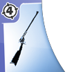

Mustang
When you have a Mustang horse in play, the others "see" you
at a distance increased by 1, so they will need a longer range weapon to shoot at you.
However, you still see the other players at their normal distance!

Barrel
The Barrel allows you to "draw!" when you are the
target of a

: if you draw a card with a

tag, you
are Missed! [

] - otherwise you continue normally.
When a player shoots at you, the barrel gives you an additional chance before checking your hand!!!

Jail
Play this to put any player (except the Sheriff) in Jail.
If you are in Jail, you must "draw!" before the beginning of your
turn: if you get a card with a
tag, you escape from
Jail and continue your turn as normal, otherwise you'll skip your turn.

Dynamite
Play this card in front of you: the Dynamite will
stay there for a whole round. When you start your
next turn (you have the Dynamite already in play),
you must "draw!": get a

tag and the Dynamite explodes (you lose 3
life points); otherwise, the Dynamite goes to the next player.

Scope
When you have a Scope in play, you "see" the others
at a distance reduced by 1. This affects all distance-based card, including your weapons.
However, the other players still see you at your normal distance!

Schofield
This weapon extends your shooting range to 2.
You may only have one weapon at a time: using a new weapon discards the former.

Remington
This weapon extends your shooting range to 3.
You may only have one weapon at a time: using a new weapon discards the former.

Rev. Carabine
This weapon extends your shooting range to 4.
You may only have one weapon at a time: using a new weapon discards the former.

Winchester
This weapon extends your shooting range to 5.
You may only have one weapon at a time: using a new weapon discards the former.

Volcanic
With this card in play you may play any number of BANG! cards
during your turn. These BANG! cards can be aimed at the same or
different targets, but are limited to a shooting range of 1.

Hideout (DODGE CITY)
Same as MUSTANG, but you can have both!

Binocular (DODGE CITY)
Same as SCOPE, but you can have both!